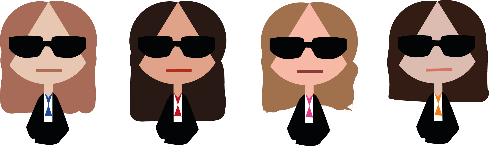

In unserer interaktiven Simulation ,,Safety First’’ soll der Nutzer in die Rolle des Staates schlüpfen und versuchen eine totalitäre Regierung zu erschaffen. Dafür hat er 4 Wochen Zeit und soll die Bürger so wenig wie möglich verärgern. Stichwort dafür ist also Manipulation, denn die Grenzen zwischen Bewahrung und Bewachung sind nicht immer eindeutig. Die Idee dahinter ist es dem Nutzer ein mögliches Zukunftsszenario zu präsentieren, welches eintreten könnte, wenn er weiterhin seine personenbezogenen Daten blind weitergibt.
Safety First
Was ist Safety First?
Wer sind wir?
Wir sind Team 4, bestehend aus Anna Antony, Christina Nguyen, Nina Tanzer und Hilal Yazici. Momentan sind wir Studierende des 2. Semesters im Studiengang Interactive Media Design an der Hochschule Darmstadt. Wir sind ein bunter Mix aus verschiedenen Menschen mit verschiedene Stärken, die zusammen die Simulation ,,Safety First’’ erschaffen haben.
